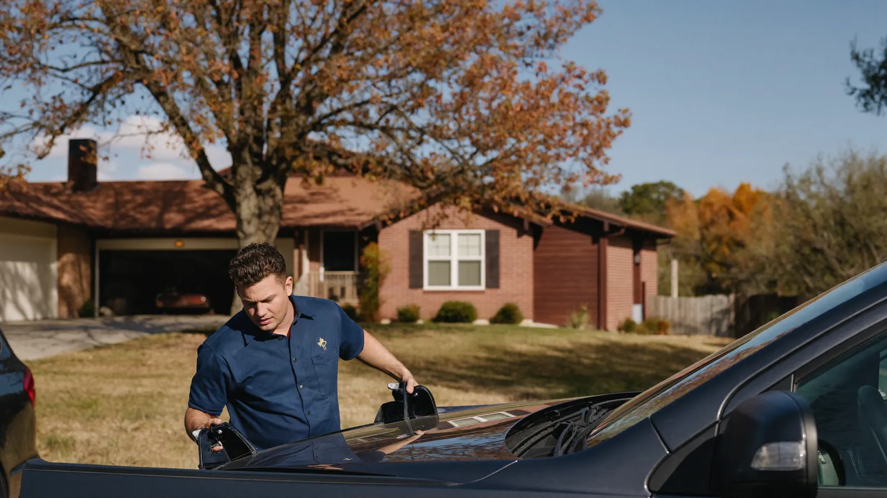

ADAS calibration in Fort Worth resets the camera behind your windshield after the glass is replaced, so lane-keeping assist, adaptive cruise and automatic emergency braking see the road the way the carmaker intended.

There are two common methods. Static calibration uses printed targets placed at exact distances in front of the car while a scan tool tells the camera where to look. Dynamic calibration has the car driven at set speeds on marked roads while the camera learns the lane lines.
Some cars need one method, some need both. The carmaker’s service procedure decides which, and the scan tool confirms the camera passed before the job is finished.
The camera is mounted to a bracket on the glass. Even a perfect install can sit a hair higher or lower than the old windshield, and a one-degree change at the camera turns into a big miss many car lengths down the road.
Names you might see on your dash include Honda Sensing, Toyota Safety Sense, Subaru EyeSight and Ford Co-Pilot360. If your car has one of these, plan on calibration with the new windshield. The first thing many callers ask is “Do I really need this?” On these cars, the carmaker says yes.
Static calibration needs a level floor, targets and setup time, so it usually costs more than dynamic. Cars that need both methods cost the most. Some models also need the carmaker’s own software.
When the windshield is part of an insurance claim, calibration is often covered with it. Call (817) 769-3783 with your VIN for a free quote on ADAS calibration in Fort Worth.
| Static calibration | Dynamic calibration |
|---|---|
| Done parked, with targets set in front of the car. | Done while driving at set speeds on clearly marked roads. |
| Needs a level surface and careful measuring. | Needs good weather and clear lane lines. |
| Common on many Toyota, Honda and Subaru models. | Common on many domestic and European models. |
Calibration usually comes right after a windshield replacement in Fort Worth.
If your car has a windshield-mounted camera, carmakers call for ADAS calibration after the windshield is replaced. Skipping it can leave lane-keeping or automatic braking slightly off, even with no warning light. Fort Worth drivers with a camera near the mirror should plan for it.
ADAS calibration in Fort Worth usually takes 30 minutes to about an hour, longer when a car needs both static and dynamic calibration. It is done after the windshield urethane has set.
Look for a camera housing behind the rearview mirror and features like lane-keeping assist, adaptive cruise control or automatic emergency braking. Your VIN also tells us, so share it when you call for a quote.
Call now for a free quote. We come to your home or office in Fort Worth.
Call (817) 769-3783 for a Free Quote